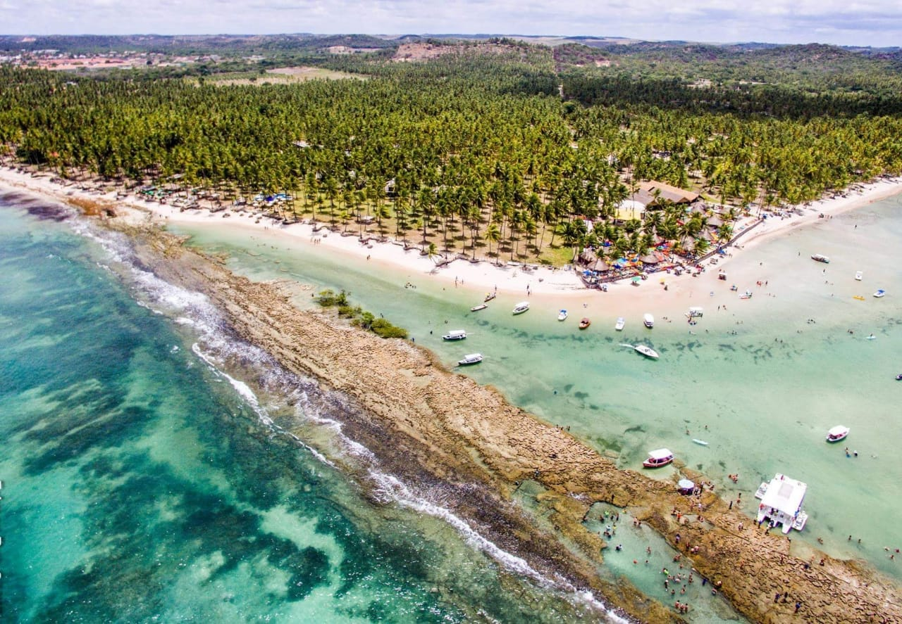

Descobrindo as Praias do Nordeste
Nesta viagem inesquecível, explorei as maravilhosas praias do litoral nordestino. A água cristalina e a areia branca formam um cenário de tirar o fôlego, perfeito para relaxar e esquecer a correria da cidade.
Além das paisagens incríveis, a receptividade das pessoas e a culinária local são atrações à parte. Experimentar os pratos típicos da região com o pé na areia foi uma das melhores experiências da viagem. Recomendo a todos!
